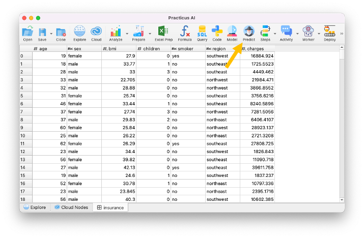
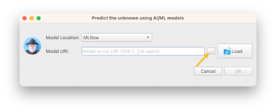
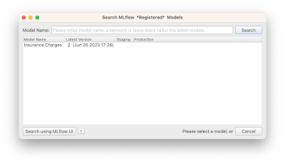
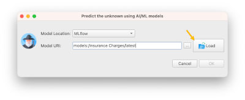
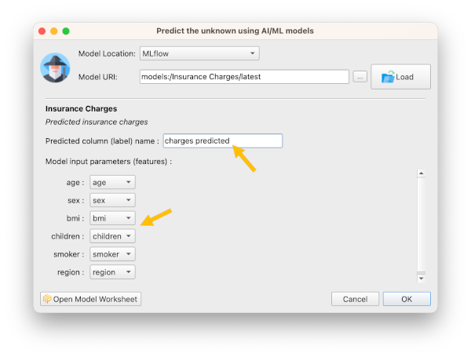
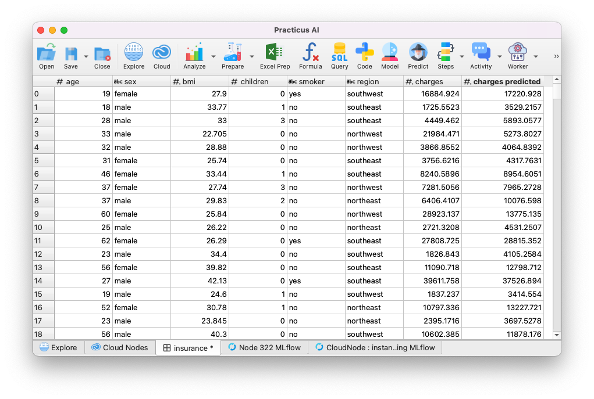
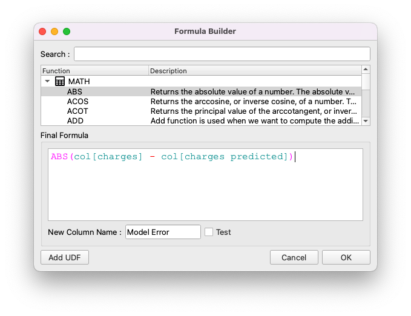
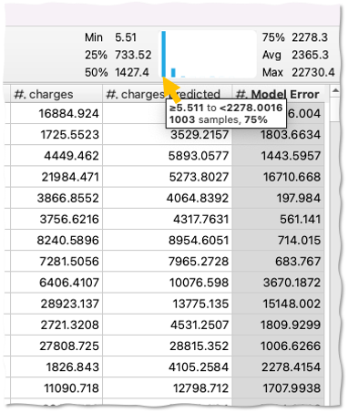
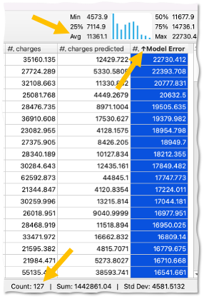
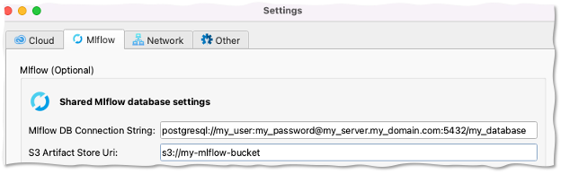

Making Predictions
This section requires a Practicus AI Cloud Worker. Please visit the introduction to Cloud Workers section of this tutorial to learn more.
Loading Insurance dataset
- Open Explore tab
- Select a Cloud Worker upper right of screen (start new or reuse existing)
- Select Cloud Worker Files
- Navigate to Home > samples > insurance.csv and Load
- Click Predict button

AI Model locations
The AI model you or some other person built can be found on a variety of locations or databases.
Practicus AI currently support predicting models in the below locations:
- MLflow model database
- Cloud Worker
- Your computer
- S3
- An API endpoint (for programmers)
In this tutorial we will show MLflow usage.
Predicting using MLflow database
- To locate the model we just built click on the ... to search for it

-
In the search dialog that opens, type insurance and hit enter
-
You will find the AI model you built in the previous section of this tutorial.
Cannot find model? It is probably because you are not using a central MLflow database yet, and you built the AI model using a different Cloud Worker. Please check the using a central MLflow database section below to learn more. For now, please read insurance.csv using the same Cloud Worker that you built the AI model with.

- Select the model and click ok
You will see the model location (URI) on screen. Although you can click ok to make the predictions now, we strongly suggest you load the model details (metadata) first.
- Click Load to load model details

- If you prefer, make the dialog larger
- Rename predicted column name to charges predicted since we already have a column named charges. If you don't, predicted values will overwrite the original ones.
- Confirm the features (columns) requested by the model match the ones that we provide
Note: Sometimes the feature names will not match. E.g. AI model could need a feature named children, and our dataset could have a feature named child. Practicus AI uses a simple AI algorithm to match the features names, but it is possible there is a mistake. It is always a good practice to confirm the matching is correct.
- Click ok to predict

Your predictions will be made.

Analyzing model error
Your AI model will almost always have a margin of error. We can estimate the error we expect this model will make.
- Click on Formula button
- Add the below formula, and name the new column Model Error
- Click ok

You will see the errors our model makes.
- Click on Model Error column
- Move your mouse over the mini-histogram
You will see that in ~75% of the cases, we expect that our model will make an error less than ~$2200

- Move your mouse to the right on the mini-histogram to see in what % of the cases our model makes not so good predictions
- Click on one of the bad prediction bars on the mini-histogram, and select Filter to Keep >= ...

You will see all the cases where our model did not do a good job.
- Select Model Errors column
- Hit Ctrl (or Cmd) + Up Arrow to sort descending
You will now see the worst predictions located at the top. When you select a column, bottom right hand of the screen shows some basic statistics in addition to the mini-histogram. You will see that in 127 cases our model had some room for improvement.

This might be a good time to analyze the individuals of the not so good predictions, and see if there is anything we can do to get our data in a better shape. Often, better data will lead to better models.
You can use the same analytics tasks to visualize and profile this data to see if there is a pattern you can detect. In some cases, your data will have errors, and fixing these will improve the model. In some other cases, you will find out that you are simply missing key features. E.g. for the insurance example, existing health problems could very well be a key indicator for the charges, and we miss this data.
Sadly, there is no standard way to improve AI models. Sometimes a technical machine learning coder can greatly improve a model by tweaking parameters. And in some other cases a domain experts' professional experience to optimize the data will be the answer. For some tough problems, you will most likely need both of these personas do their magic, and collaborate effectively.
(Optional) Understanding Ground Truth
In most real life scenarios, you will make predictions for unknown situations based on what we already know, the ground truth.
Then, "life will happen", and you will observe the real outcome.
For instance, you can make predictions on which customer you "might" lose. This is called customer churn prediction AI use case. 6 months later, you will see that (unfortunately) you really lost some customers. And you will have more up-to-date ground truth.
With Practicus AI, you can make regular predictions, for instance weekly or nightly, by deploying your models to production. We will discuss how to do this later.
Practicus AI allows you to store your predictions in a database, so you can compare them later with the ground truth life brings, This will give you the real errors your models make, in comparison to the estimated errors we discussed in the previous section.
(Optional) Understanding Model Drift
If you choose to store your prediction results regularly, and then compare these to the ground truth, AND you do this on a regular basis you will have a good feeling of how your models perform. In some cases, a model that was doing great a while back will start to perform not so good. This is called the model drift.
With Practicus AI, you can implement systems to automatically detect which of models start drifting. We will discuss this topic later.
(Optional) Using a central MLflow Database
In this tutorial we used a local MLflow database on a Cloud Worker, which will disappear when you terminate it. This will be perfectly fine if you are just experimenting. For other cases, you can copy your models from the Cloud Worker manually. Or even better, you can store them in a central database at first place.
To store models in a central database and share with others, do the following: - Create or reuse a cloud database, such as MySQL or Postgresql - Create an S3 bucket to store model artifacts. These are binary files, which can be very large, so it is not a good idea to store them in a relational database - Open Practicus AI app, go to settings > MLflow - Enter the connection string of the database - Enter S3 bucket
Sample MLflow setup

When you have a central MLflow database configured, your Cloud Workers will automatically switch to using this database, instead of the local ones.
With a central model database you can:
- Consume other users models to make predictions
- View other users experiment results
- View model explanation visuals
- Predict using models that are not built with Practicus AI
- Share Practicus AI models with other systems, so they can make predictions without Practicus AI
Central model databases can greatly democratize how AI models are built, and how they are consumed.